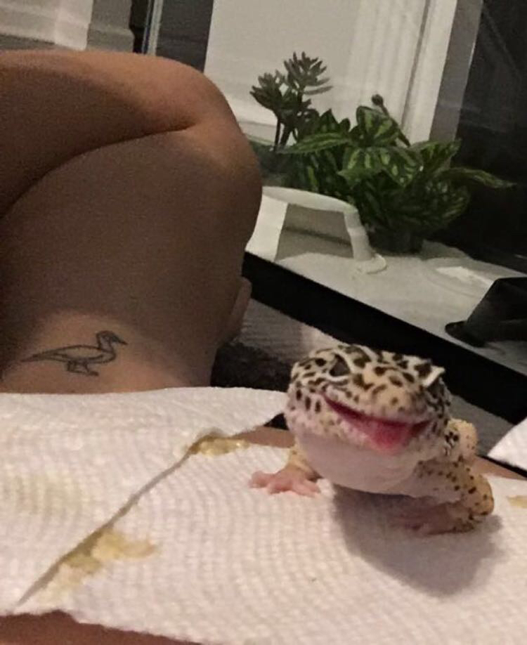

About Me
Hello, my name is Sam Zhang. I am currently a Junior at the University of Georgia and am expected to graduate May 2022. I am friendly, open-minded, and creative.
Education
- Major: Enviromental Resource Science
- Minors: Ecology, Public Health and Management
- Certificate: Sustainability
- LinkedIn: linkedin.com/in/sz2000
- My current studies focus on sustainability, water quality, natural resources, and public representation. My coursework and hands-on experience in labs have allowed me to develop skills in data collection and entry. Furthermore, the research we conduct in lab and in the field has allowed me to strengthen my skills in data analysis and in Microsoft Excel (and Office).
Background
I was born in Brooklyn, New York and was raised in Franklin, TN. I am currently 20 years old. I am a first generation Asian American college student. My immediate family consists of my parents, my older brother, and my pet leopard gecko named Golby. I now live in Athens, GA and attend the University of Georgia.

Hobbies
- Reading: I’ve enjoyed reading ever since I’ve been young. In the past, I’ve preferred fantasy series and young adult fiction. Currently, I enjoy reading psychological thrillers, mysteries, and contemporary novels.
| My Favorite Books |
| Title |
Author |
| Gone Girl |
Gillian Flynn |
| A Little Life |
Hanya Yangihara |
| Where the Crawdads Sing |
Delia Owens |
| Flowers for Algernon |
Daniel Keyes |
| Ender's Game |
Orson Scott Card |
- Sustainability: Sustainability is an important factor to my everyday life. I try to live responsibly in my day to day life so that future generations will be able to enjoy the planet and it all its resources. To achieve this, I compost at home, limit my fish intake (as a pescitarian), purchase secondhand fashion/ goods, and try to save energy to reduce my carbon emissions.
- Art: I enjoy being hands-on and discovering different paths to creativity. Currently, I like drawing, painting, and jewelry-making in my free time. Additionally, I enjoy consuming music made by different artists including: The Lumineers, Mac Miller, and Brockhampton.